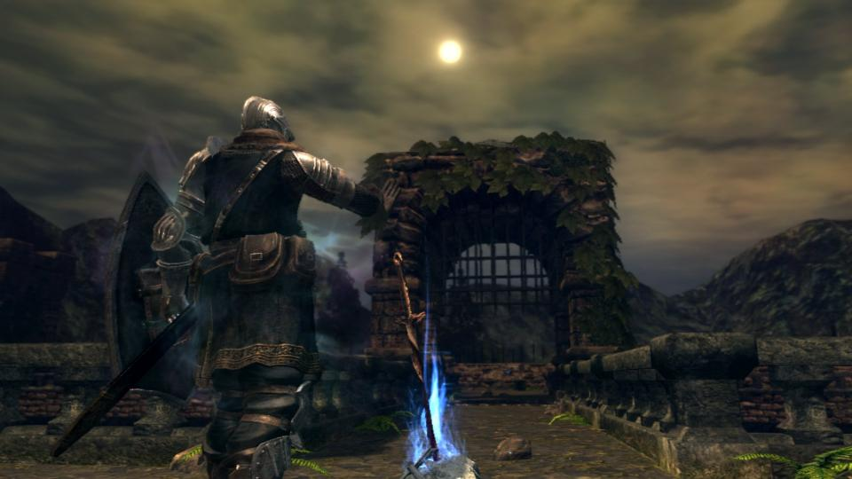
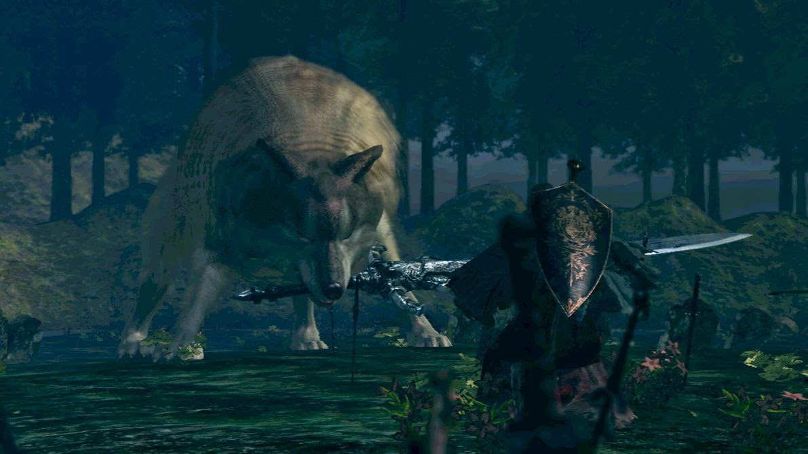
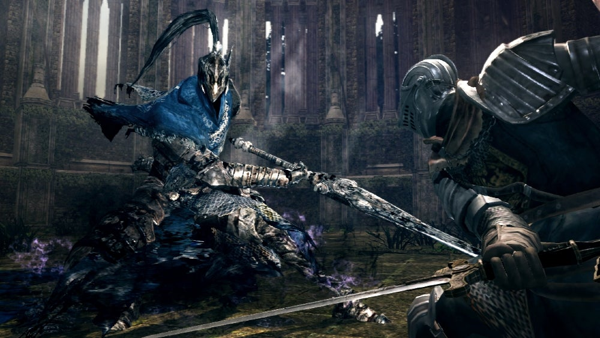

DARK SOULS REMASTERED
Expansión "Artorias of the Abyss"
AREAS
Sanctuary Garden
Oolacile Sanctuary
Royal Wood
Gazebo
Oolacile Township
Chasm of the Abyss

NPCs
Elizabeth
Marvelous Chester
Lord's Blade Ciaran
Hawkeye Gough
Great Grey Wolf Sif

BOSSES
Sanctuary Guardian
Knight Artorias
Black Dragon Kalameet
Manus, Father of the Abyss

Para más información sobre Dark Souls: Remastered, visite los siguientes enlaces:
Wikipedia Oficial
Página de Steam
Página de Bandai